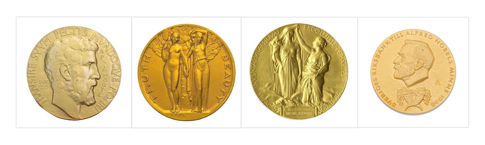

Hi!
I am Jean Bourgain (#pen-name). 
I currently am preparing for UPSC & few other examinations on Mathematics & Theoretical Computer Science, I intend to use this blog as an account of my progress & efficiency wrt planning in my preparation, in parallel, the blog would also be a comprehensive knowledge resource for the interested - especially on topics related to Theoretical Computer Science, Pure Mathematics, UPSC, Economics, Psychology.
My targets, timeline, current progress & pending tasks in all topics can be gauged from here:
Targets & Timeline
Overall Progress
Monthly Progress
Overall Pending Tasks
Temporary Pending Tasks
My daily-tasks diary can be checked here: Diary
My daily answer writing (preparation for UPSC) posts can be checked here: Answer Writing
If you find my work interesting, you can follow me in either one among or both - Goodreads, Twitter; for more infromation you can email me at jeanbourgain8@gmail.com